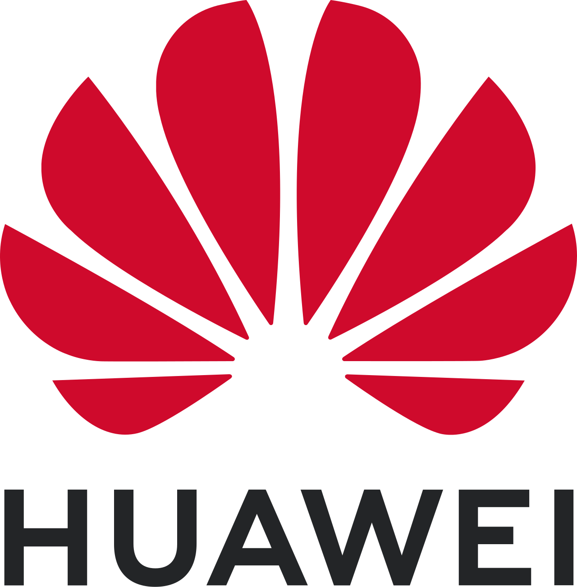

Huawei Agentic Cloud Console
AI & Cloud | Innovation & PoC
Defining how future users interact with Huawei Cloud in the agentic generation
1. The Challenge
This project focuses on Huawei Cloud (HWC) Console, the core portal for enterprise users in
various scale. As agentic capability grow, we see the fundamental restructure of cloud interface
with cloud architecture the potential pivot point for HWC to surpass competitors.
Problem:
- As customers grew in scale on HWC, they find the platform complicated to use for daily
operation and monitoring. Services are getting better and diversed, but existing / classic
console interfaces, even with AI, are static, passive, information overwhelming and still a
lot of manual effort / attention needed. Current conversational UI for AI is just not
sufficient.
- In a future setting of agentic cloud, customers will meet amplified challenges of using and
trusting the system for cloud domain. Even when the agentic level is L4~5, human will find
it speculative and uncertain to work with.
Constraints:
- US sanctioned tooling options (no access to leading design and AI tool)
- Uncertain and progressing of future cloud architecture
2. Key Strategies & Decisions
Human-like Collaboration
Establish overall human like collaborator mental modal (autonomous + ambient in the loop).
Principles:
- Expand User Type: From engineer to 1/2 level higher upstream users like app
builder and even business owner.
- Beyond Conversation UI:
- Shift to congnitive experience in cloud use case.
- Project manangement like canvas UI for conversation navigation pattern.
- Mix of generative UI with fixed UI.
[PLACEHOLDER: Intent space and node interaction and artifact]
- Omnipresent Integration: Integration into daily tools for contextual
output.
[PLACEHOLDER: Omnipresent with other tools]
- Collaborative: Goal setting with self healing.
[PLACEHOLDER: Collaborative and self healing]
- Adopt AI in UX Process:
- Went in a very narrow list and find Tempo.ai as the vibe designing tool.
- Integrate it in the process and upgrade AI driven UX process, for all roles
(download the code and put it somewhere centric).
4. Impact & Reflection
Lock implementation for key pattern.
Improvement in UX efficiency with the introduction of AI tool flow in concept phase:
- AI for UX process from research, to ideating, to concept and to delivery.
- Speed up concept design building speed by 250%